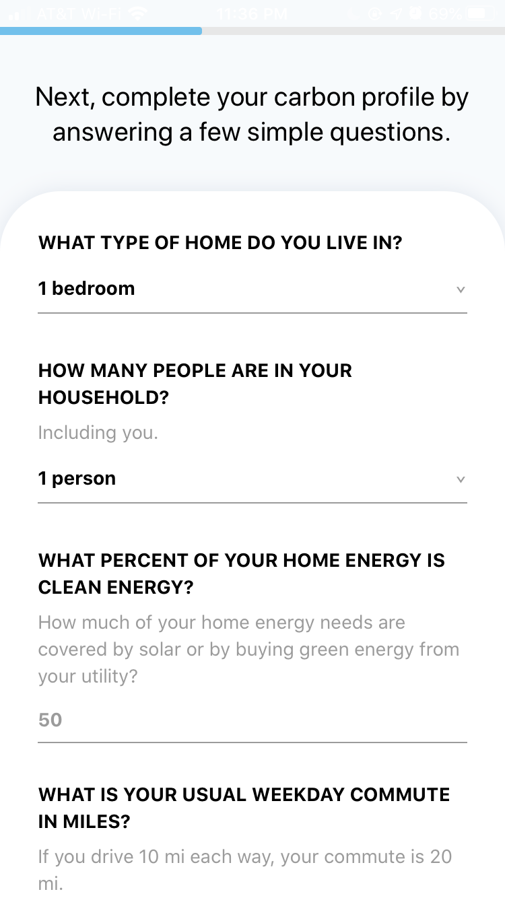
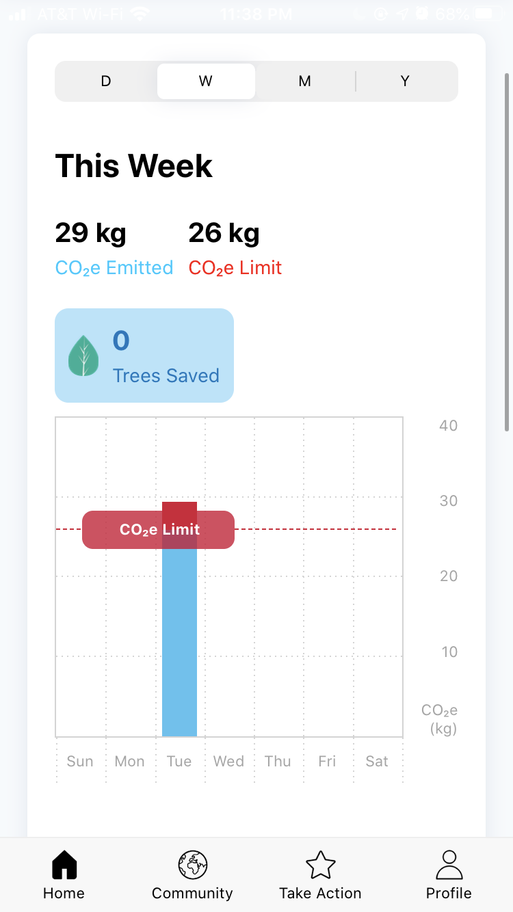

The first app that I looked at was Bikemap. This app claims to offer good bike maps for its users. When you first enter the app, it reminds me of Uber or Lyft, with just a map and a search bar. The map is less aesthetically pleasing that most maps and harder to read, but still usable. After pressing on the discover button, it is clear that the app developers did not create bike maps for their users, but rather a platform for users to input maps and then other people can use them. While using this app in Davis, there appear to be no maps created for the area. The closest maps are in Sacramento, Roseville, and Elk Grove. It splits the maps up sections, such as popular, hilly, flat, uphill, and downhill. There is a section called my routes that allows the user to create their own maps and share them with the public. There is a premium option that allows people to have offline maps, bike-type optimized routing, and advanced cycling maps for a couple of dollars a month. From my observations, there seem to be a wide array of different types of people who use the app. From avid cyclers to people who are just planning practical routes to and from work or other average places. One concern that I have is that the routes are public, and I saw a lot of different "work" routes attached to profiles. In my opinion, that is a little violating in terms of privacy and I would be concerned while using the app. The biggest downside to this app is that it requires users to input maps and then other people can use them. If someone downloaded the app with no maps in their area, they would be less inclined to use it, and therefore no one would use the app and start making maps.
 The second app that I studied was called Joro, which is an app that helps a person calculate their carbon footprint. My first impression is that the app has a very clean UI, with fonts that are very readable against a white background. The simple design made it seem like it was easy to use. The app starts with a little informational slide, then it sends the user to a sign in page. After signing in or registering, there is a little questionnaire that determines how carbon friendly the user is. There are some questions that I did not know the question to, such as how much clean energy my house uses, since I live in an apartment and do not have that information readily available. The home page shows how much CO2 you have emitted in day, week, month, or year form with a colorful bar chart, and how many trees you have saved that year. There is a community page that lets people find other Joro users with the same goals. In case you are currently unhappy with the CO2 emissions that you put out, Joro has a helpful "take action" page that gives challenges to people that will slowly reduce their carbon emissions. For example, you can pledge to carpool 4 times a week to reduce carbon emissions by 1.8% a year. The app claims that if everyone reduced their carbon emissions by 12%, the world could be safe from a detrimental future. On the take action page, there is also an option to offset monthly output by donating money to a charity that takes care of the environment. Personally, while I think the app is a good idea, I can't image many people using it. The questions are a bit difficult to answer, and it requires credit card access to find purchases that emit carbon. Security is an issue and there just doesn't seem to be much benefit.